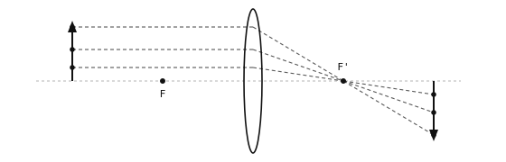

4.2. العدسات والتركيز البؤري¶
تعمل الثقب الدبوسي لكنها معتمة. وتستبدل العدسة الثقب الدبوسي بفتحة أوسع وتعيد تركيز كل شعاع يدخلها مرة أخرى إلى نقطة واحدة على مستوى الصورة، فتكون الصورة ساطعة وحادة معاً -- وتختفي المفاضلة التي فرضها الثقب الدبوسي.
4.2.1. الانكسار¶
يتباطأ الضوء عند دخوله وسطاً أكثر كثافة (الزجاج) قادماً من وسط أخف (الهواء)، ويؤدي تغيُّر السرعة عند السطح البيني إلى انحناء الشعاع. والعدسة قطعة من الزجاج مصمَّمة بحيث ينحني كل شعاع من نقطة معينة في المشهد بالمقدار الدقيق اللازم ليتجمع مجدداً عند النقطة نفسها على الجدار الخلفي. وتتجمع الأشعة من نقطة مختلفة في المشهد عند نقطة مختلفة، وهكذا؛ فتُبنى الصورة نقطة مشهد تلو الأخرى، تماماً كما في الثقب الدبوسي، لكن مع كمية ضوء أكبر بكثير لكل نقطة.
4.2.2. نموذج العدسة الرقيقة¶
يأخذ تصميم العدسة الواقعي في الحسبان شكل الزجاج، والعناصر المتعددة، والطول الموجي للضوء المار عبرها. أما الهندسة التي يحتاجها بقية هذا القسم فتأتي من تجريد أبسط -- نموذج العدسة الرقيقة -- الذي يعامل العدسة كمستوٍ عمودي على المحور البصري حيث تغيّر الأشعة اتجاهها لحظياً، متجاهلاً السماكة الفعلية للعدسة.
يرتكز النموذج على ملاحظة بدئية واحدة: الأشعة الواصلة إلى العدسة موازيةً للمحور البصري تنكسر جميعها لتمر عبر النقطة نفسها خلف العدسة. وهذه النقطة هي البؤرة، ومسافتها من العدسة هي البعد البؤري للعدسة، ويُكتب اصطلاحاً \(f\). و"عدسة 50 mm" هي عدسة بعدها البؤري 50 mm. ولكل عدسة بؤرتان، واحدة على كل جانب، على مسافة متساوية \(f\) -- واحدة على جانب الصورة وأخرى متناظرة على جانب الجسم.
من هذه الحقيقة الوحيدة تنبثق قاعدتان لتتبّع الأشعة تمكّنان النموذج من تحديد موقع أي نقطة صورة:
الشعاع الداخل إلى العدسة موازياً للمحور ينكسر ليمر عبر البؤرة البعيدة على جانب الصورة.
الشعاع المار عبر مركز العدسة يستمر مستقيماً دون انحراف -- لأن العدسة عند المركز تكون رقيقة بما يكفي بحيث لا يوجد فعلياً زجاج لثني الشعاع.
قد تبدو هاتان القاعدتان وكأنهما وصف لتتبّع شعاع واحد، لكنهما تصفان ما تفعله العدسة عند كل نقطة في المشهد في الوقت نفسه. فكل نقطة مرئية تبعثر الضوء في كل اتجاه؛ وأيٌّ من أشعتها يدخل العدسة يتجمع مجدداً عند صورة تلك النقطة على الجانب الآخر. والصورة الكاملة هي اتحاد ملايين تلك التجمّعات لكل نقطة، وكلها تحدث على التوازي.

تنطبق قاعدة الموازي-إلى-البؤرة نفسها عند كل نقطة من الجسم. فكل نقطة في المشهد تنتج نقطة صورتها الخاصة على الجانب الآخر؛ وهي معاً تتبع صورة مقلوبة كاملة.¶
يجعل التكبير على نقطة مشهد واحدة هذا التركيب صريحاً. فشعاعان ينطلقان من تلك النقطة في المشهد -- أحدهما موازٍ للمحور (منكسر عبر البؤرة البعيدة) والآخر عبر مركز العدسة (دون انحراف) -- يتقاطعان مجدداً على الجانب الآخر من العدسة، وحيث يتقاطعان تكون صورة تلك النقطة.
![Two diagrams stacked. The top diagram shows three parallel rays entering a vertical lens from the left and refracting to converge at a focal point on the optical axis at distance f behind the lens. The bottom diagram shows the thin-lens construction: an upright arrow on the left at distance u in front of the lens, with the near and far focal points marked on the axis. A parallel-then-through-focal-point ray and a straight-through-centre ray leave the arrow's tip, refract at the lens, and meet on the right at distance v behind the lens, where an inverted image arrow ends.](../../../../_images/thin-lens.svg)
الأعلى: تتجمع الأشعة المتوازية عند البؤرة. الأسفل: شعاعا التركيب من نقطة مشهد يحددان موقع صورتها على الجانب الآخر من العدسة.¶
والهندسة نفسها معبَّراً عنها جبرياً هي معادلة العدسة الرقيقة. وهي تربط بين مسافة الجسم \(u\)، ومسافة الصورة \(v\)، والبعد البؤري \(f\):
بمعلومية أي اثنين من الثلاثة، تعطي المعادلة الثالث.
بالنسبة لمشهد بعيد جداً (\(u\) كبيرة)، يصبح الحد \(1/u\) مهملاً وتقترب \(v\) من \(f\) -- أي أن المشاهد البعيدة تتركز عند البؤرة. أما المشاهد الأقرب فتحتاج إلى \(v\) أكبر من \(f\)، ما يعني أن العدسة يجب أن تقع أبعد عن المستشعر لتبقى في حالة تركيز. وهذا ما تفعله فيزيائياً كل آلية تركيز -- سواء كانت أسطوانة يدوية، أو محرّك تركيز تلقائي، أو حشوة تركيز ثابت: تحريك العدسة ذهاباً وإياباً بحيث تطابق \(v\) قيمة \(u\) للمشهد المطلوب من الكاميرا تصويره بوضوح.
4.2.3. عمق المجال¶
العدسة المركَّزة على مسافة جسم واحدة لا تكوّن صورة حادة تماماً إلا للنقاط الواقعة على تلك المسافة بالضبط. أما النقاط الأقرب أو الأبعد فتتركز عند بقع أمام المستشعر أو خلفه وتصل إلى المستشعر على شكل دوائر تشويش صغيرة. ونطاق مسافات الأجسام الذي تكون فيه دوائر التشويش تلك صغيرة بما يكفي لتبدو حادة هو عمق المجال (DOF).

النقاط الواقعة على المسافة المركَّزة وحدها هي التي تُسقط على شكل نقاط حقيقية على مستوى الصورة؛ أما النقاط الأقرب والأبعد فتصل على شكل دوائر تشويش. ونطاق التشويش المقبول هو عمق المجال.¶
يزداد عمق المجال عندما تُضيَّق العدسة (stopped down) -- إذ تسمح الفتحة الأصغر بدخول حزمة أضيق من الأشعة من كل نقطة في المشهد، وتنتج تلك الحزم الأضيق دوائر تشويش أصغر للنقاط خارج التركيز. لذا تمنح الفتحة الأصغر عمق مجال أكبر لكنها تُدخل ضوءاً أقل، بينما تُدخل الفتحة الأكبر ضوءاً أكثر لكنها تقلّل عمق المجال. والفتحة هي المقبض الثاني الذي تمنحه العدسة للمصوّر، وهي مثل خيار الثقب الدبوسي/العدسة قبلها مفاضلة بين الحدة والسطوع.
4.2.4. الفتحة والعدد البؤري¶
تُعبَّر عن فتحات العدسات بـالأعداد البؤرية (F-numbers)، وهي نسبة البعد البؤري إلى قطر الفتحة:
حيث \(D\) هو قطر الفتحة. فالعدسة بطول 50 mm وفتحة عرضها 25 mm لها \(N = 2\)، وتُكتب f/2. والأعداد البؤرية الأصغر تعني فتحة أوسع (ضوء أكثر، عمق مجال أقل)؛ والأعداد البؤرية الأكبر تعني فتحة أضيق (ضوء أقل، عمق مجال أكبر). والنسبة، لا القطر المطلق، هي ما يهم لأن نفس النسبة \(f / D\) تعطي نفس سطوع الصورة لنفس المشهد، بغض النظر عن البعد البؤري.
تأتي العدسات القياسية في OpenMV Cam بفتحات ثابتة مختارة للاستخدام العام؛ والعدد البؤري هو أحد المواصفات المذكورة في ورقة بيانات العدسة. وتقل أهمية الفتحة في الاستخدام اليومي مقارنةً بالبعد البؤري على هذه الكاميرات، لكن المفهوم يهم لقراءة ورقة البيانات.